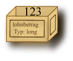

Antwort:
Ja — das ist der Grund, warum sie Variable genannt wird.
Ja — das ist der Grund, warum sie Variable genannt wird.
Die Millionen Bytes des Hauptspeichers in Ihrem Computer werden verwendet, um
sowohl Maschinenbefehle als auch Daten zu speichern. Die elektronischen Schaltungen des Hauptspeichers (und aller anderen Arten von Speicher) machen keinen Unterschied zwischen diesen beiden. Wenn ein Programm läuft, werden einige Speicherstellen für Maschinenbefehle und andere für Daten verwendet. Später, wenn ein anderes Programm läuft, werden einige Bytes, die vorher Maschinenbefehle enthielten, jetzt Daten enthalten und einige, die vorher Daten enthielten, werden jetzt Maschinenbefehle enthalten. Die Verwendung des gleichen Speichers sowohl für Befehle als auch für Daten war die Idee von
Um Daten in den Speicher zu stellen und sie später zurückzubekommen, muss ein Programm für jeden Speicherabschnitt, den es verwendet, einen Namen haben.
Variable — ein Name für eine Speicherstelle im Hauptspeicher, die einen bestimmten Datentyp verwendet, um einen Wert zu halten.
Erinnern Sie sich daran, dass ein Datentyp ein Schema für die Verwendung von Bitmustern im Hauptspeicher ist, um Daten darzustellen. (Diese Definition von Variablen ist übrigens nicht allzu gut. Sie wird später geändert werden müssen, wenn Sie mehr darüber lernen was "wirklich vor sich geht".)
Sie können sich eine Variable als eine kleine Box vorstellen, die aus einem oder mehreren Bytes besteht, die wiederum einen Wert eines bestimmten Datentyps enthalten können:

Variablen haben Namen wie lohnbetrag. (Details folgen auf den nächsten Seiten)
Muss eine Variable immer einen Datentyp haben?